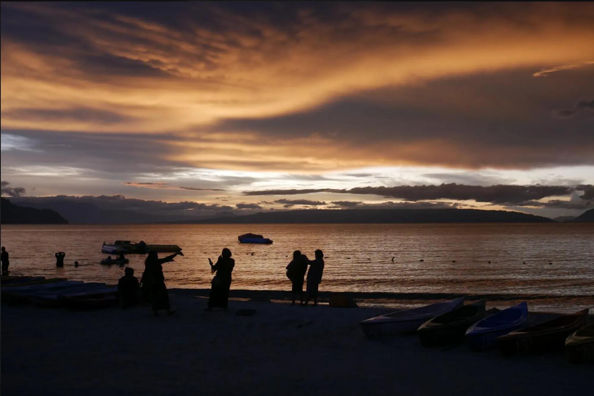
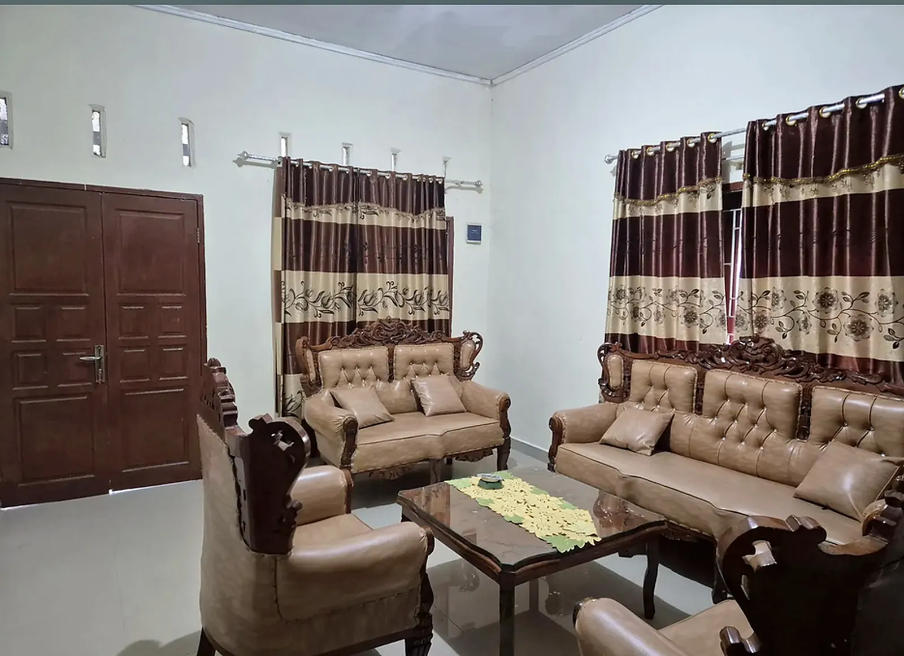
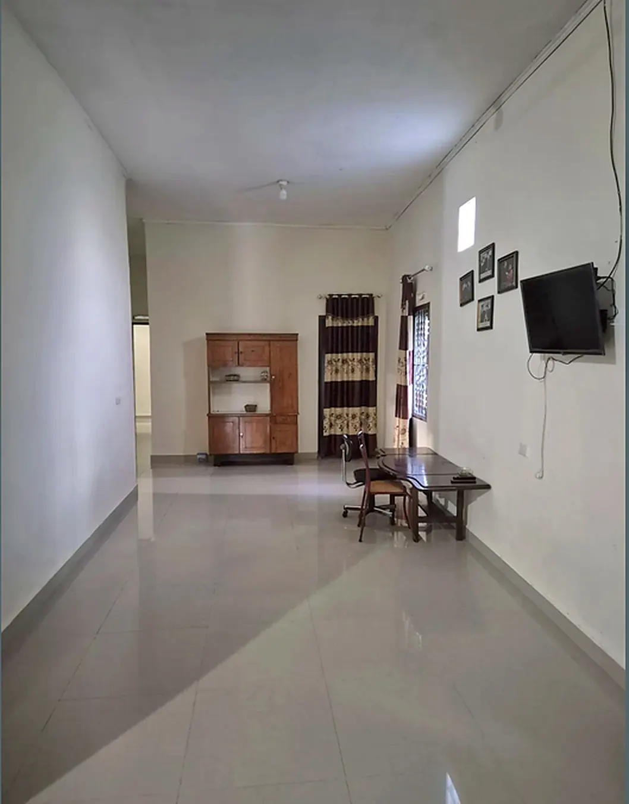
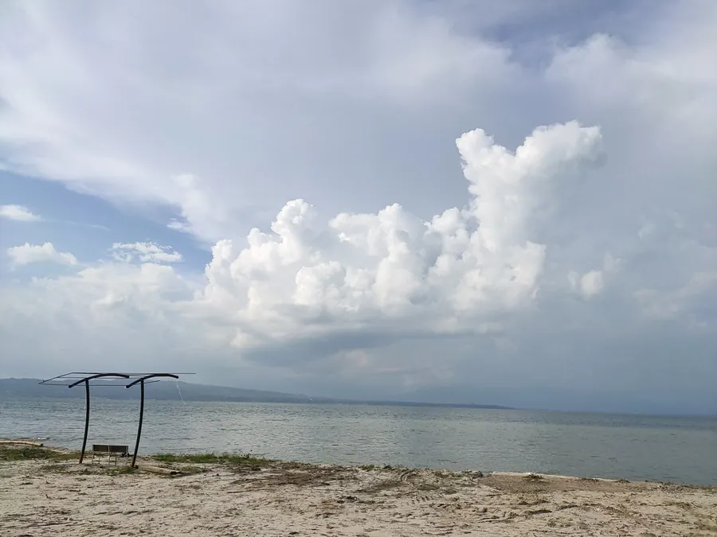
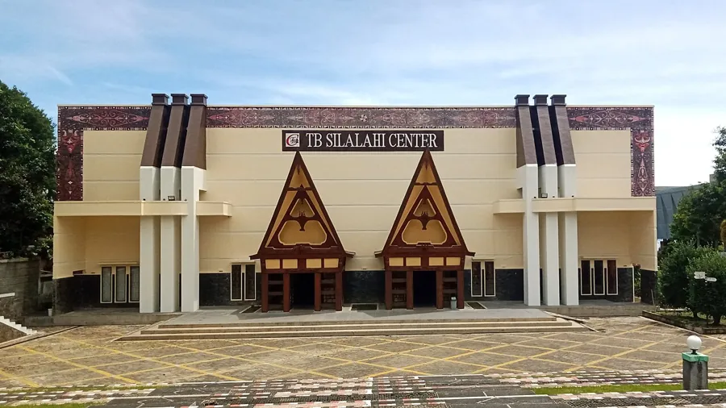
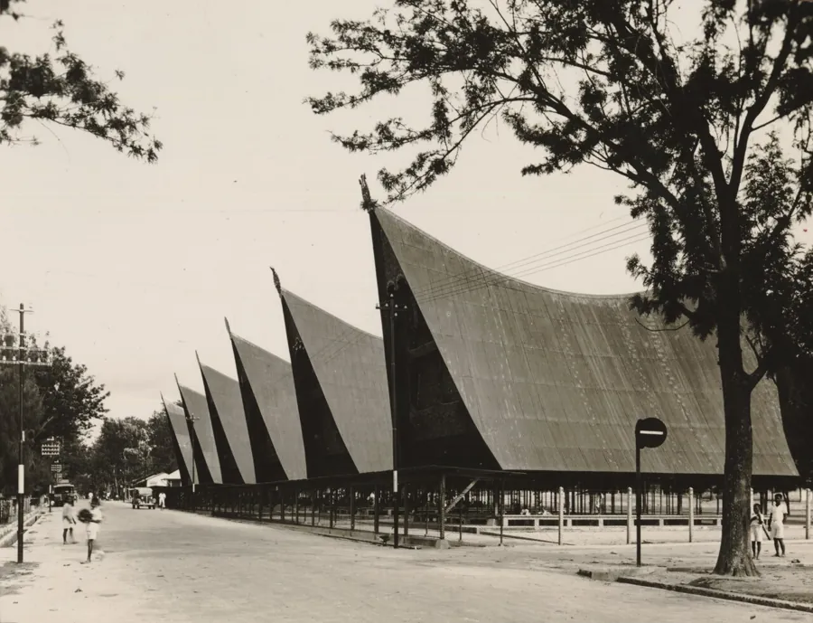
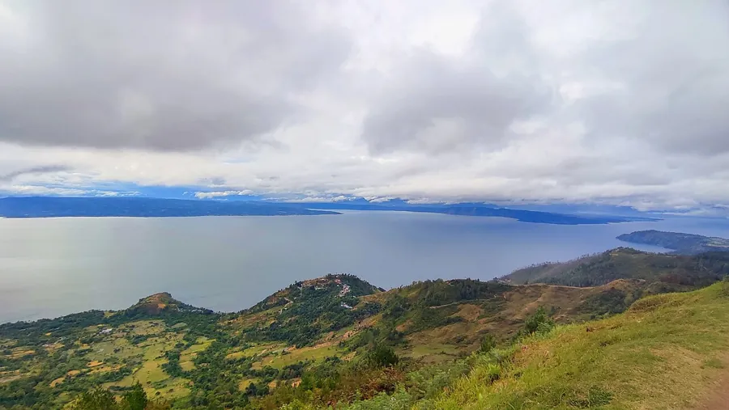

Sinok Homestay 1
Dengan pemandangan Danau Toba
- 3 kamar, 2 dengan kamar mandi dalam
- Ruang tamu dan ruang tengah
- Dapur lengkap dengan kompor gas
Mulai2 orang
Rp199.000/kamar/malam
Dua rumah, enam kamar, dapur lengkap. Satu menit ke Pantai Lumban Bulbul, cocok untuk keluarga maupun rombongan.
Dua rumah, masing-masing tiga kamar. Sewa per kamar atau satu rumah penuh.

Satu menit ke Pantai Lumban Bulbul
Kompor gas dan alat masak di tiap rumah
Tersedia di setiap rumah
Muat banyak mobil rombongan
Kendaraan dan barang lebih aman

Dua rumah dengan total enam kamar, dua dapur, dan parkiran yang muat banyak mobil. Masak bersama, kumpul di ruang keluarga, lalu jalan kaki ke pantai.
Sewa satu atau dua rumah, masak bersama di dapur sendiri.
Harga terjangkau untuk rombongan pelajar, dekat tempat wisata Balige.
Suasana tenang dekat danau, katering bisa disiapkan sendiri.
Sewa satu kamar, sarapan berdua, sore jalan di pantai.



Pasar tradisional beratap khas rumah Batak, paling ramai di hari pekan.
Lihat rute
Bukit pandang di Muara dengan panorama Danau Toba dari ketinggian, juga tempat paralayang.
Lihat ruteKafe yang sering direkomendasikan pengunjung. Jarak garis lurus dari homestay; ketuk untuk melihat foto dan ulasan di Google Maps.
Rumah makan terdekat dari homestay. Jarak garis lurus; ketuk untuk melihat foto dan ulasan di Google Maps.
Check-in mulai pukul 14.00, check-out paling lambat pukul 12.00. Kalau butuh jam lain, tanyakan lewat WhatsApp.
Bisa keduanya. Per kamar mulai Rp199.000 per malam untuk 2 orang. Untuk sewa satu rumah penuh, harganya kami konfirmasi lewat WhatsApp.
Boleh. Setiap rumah punya dapur lengkap dengan kompor gas dan alat masak.
Ada, parkirannya luas dan muat banyak kendaraan. Untuk bus besar, kabari kami dulu supaya tempatnya disiapkan.
Sekitar satu menit ke pusat Pantai Lumban Bulbul.
Isi tanggal di form pemesanan atau chat WhatsApp langsung. Ketersediaan kamar, total harga, dan cara pembayaran kami konfirmasi lewat chat.
Lumban Bulbul, Balige
Kabupaten Toba, Sumatera Utara
Check-in 14.00, check-out 12.00
Pesan langsung ke pemilik lewat WhatsApp. Tanpa biaya aplikasi, dan Anda bisa tanya apa saja sebelum memesan.
Cek tanggal menginap